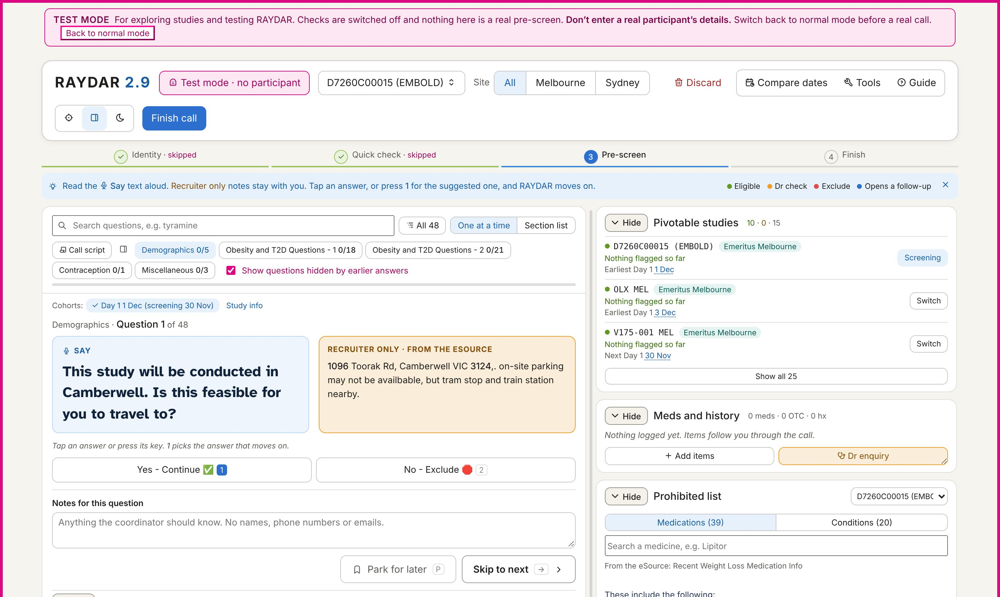
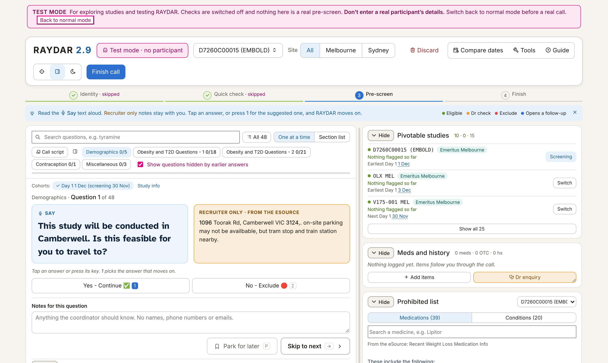
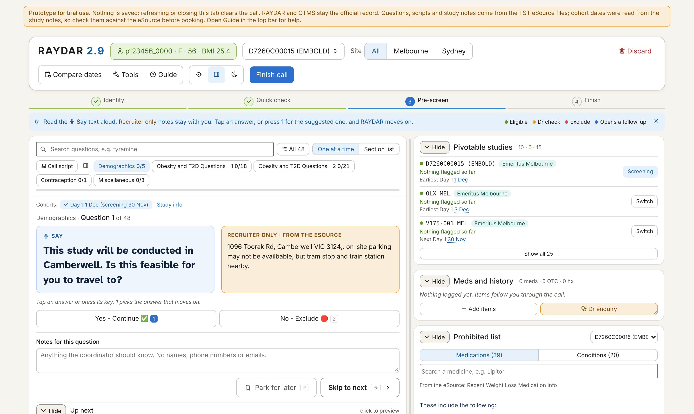
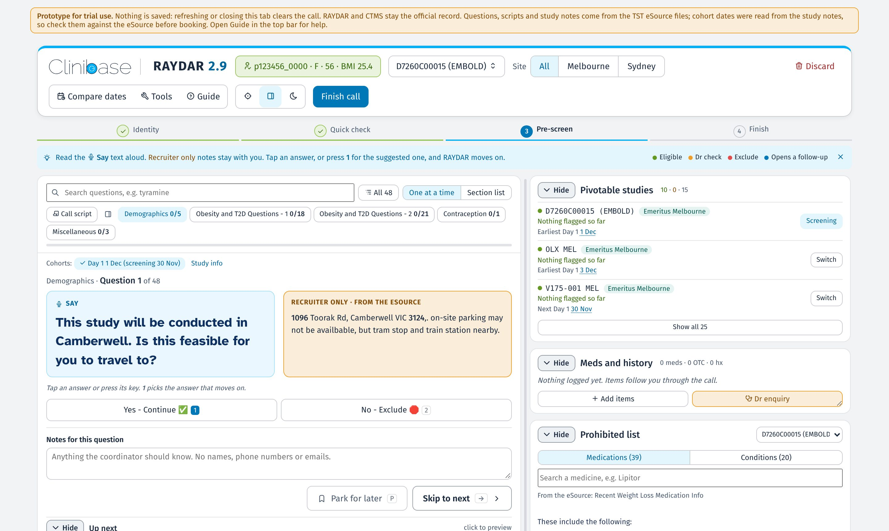
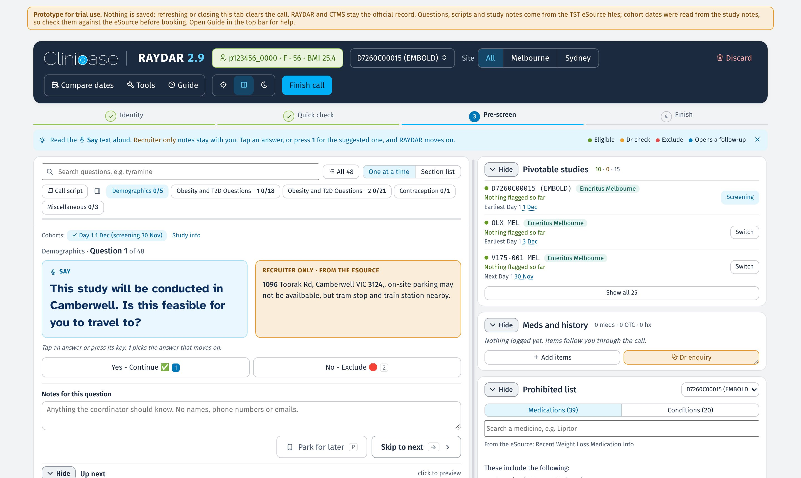

Mockups for search, test mode and Clinibase branding
Nothing here is built yet. Each section shows the options I'd build, with my recommendation marked. Pick one per section (or tell me what to change) and I'll add your choices to the pipeline. The full plan is in raydar-app/PIPELINE.md.
S1 in detail: brands, ingredients and labelled tags
The highlighted suggestion opens up with labelled tags, so a recruiter can tell straight away what the medicine is. An ingredient shows its common brands. A brand shows what's in it. The study's answer sits underneath. Other suggestions stay one line each. Drawn in branding A, in the dark look you use, with one example in light. Names, ingredients, brand counts and EMBOLD's answers are real.
- Drug class
- The class from the PBS, at the level a recruiter would recognise: Antipsychotics, Antidepressants, Opioids, GLP-1 analogues.
- Common brands
- For an ingredient: the best-known brands first, then "+N more" to see them all.
- Active ingredient
- For a brand: what's in it, with "Same as" for other brands of the same medicine. Combination products list every ingredient with its own class.
- Study line
- Excluded, Doctor check or Not on the list for the study chosen in the panel, the list item it falls under and its time window.
An ingredient. The brand people actually say ("I'm on Seroquel") is right there. "+40 more" opens the full list of generic brands.
A brand. The active ingredient comes first, because that's what the prohibited list names.
Part of a brand. Names that start with what's typed come first. Close spellings come under their own heading, so they're never mistaken for a match.
A combination product. Every ingredient is listed with its own class, so the codeine isn't missed.
The same in the light look of branding A.
Mounjaro, after the fix. Today RAYDAR says "Not on the list" here (see below).
EMBOLD's list excludes "Incretins (GLP-1 or GIP drugs)" in the last 90 days. RAYDAR matches Ozempic, Wegovy and Rybelsus (semaglutide) correctly, but shows Mounjaro (tirzepatide) as "Not on the list". The PBS files tirzepatide under "Other blood glucose lowering drugs" instead of with the GLP-1 drugs. The fix is to add tirzepatide to that list item's medicines (TST confirms it in the study admin), and to check other studies with incretin items for the same gap.
Where the tags come from. Ingredients, brands, routes and classes are already in the medicines dictionary. Two things need adding: (1) which brands are "common": the dictionary has 42 quetiapine brands with nothing marking Seroquel as the one people know. The PBS marks each medicine's original brand, so the next dictionary update would read that file and list the original brand first. A short hand-kept list can add others, such as pharmacy-shelf brands like Panadol. (2) everyday class names: the PBS wording is sometimes clinical ("Diazepines, oxazepines, thiazepines and oxepines", "Anilides"). RAYDAR would pick the level a recruiter recognises (Antipsychotics), with a short list of plain names you approve where the PBS has none ("pain and fever relief" for paracetamol, "GIP and GLP-1 drugs" for tirzepatide above are examples of these). Wegovy and Mounjaro are different medicines (semaglutide and tirzepatide), so each shows under its own ingredient.
Frequency, next to Dosage
Medications and supplements get a Frequency box after Dosage. It offers common choices as you type (Once daily, Twice daily, Three times daily, Every morning, At night, Weekly, Fortnightly, Monthly, As needed) and takes anything typed as heard ("every second day"). It shows on the logged item, the clinic PDF, the Dr enquiry, and comes back with Import callback. History items don't get it.
Adding a medication. Dosage and Frequency sit side by side. Tab fills the suggestion, the same as the name box in 2.9.
Once logged. Frequency sits between the dose and the route, wherever the medication is shown.
Suggestions as you type
Today the panel only recognises a full name, so "quetiap" says "isn't a medicine RAYDAR knows". The fix lists the medicines that start with what's typed, from the third letter, and keeps "doesn't recognise" for names that really aren't there. These use real results from the dictionary and EMBOLD's list.
Which layout?
Inside the panel, with the answer on each row. The recruiter sees Excluded, Doctor check or Not on the list while still typing, without picking first. Enter or a click opens the full card (eSource wording, time window, Add to med log).
A drop-down, the same as the med log name box. Familiar, but it covers the list underneath, and the recruiter has to pick a name before seeing whether it's on the list.
What S1 shows for each kind of search
A partial name with many matches. All 15 insulins are listed, shortest names first; the list scrolls after the first few.
Half-typed or misspelt. Shown as suggestions, never as "doesn't know".
Only real unknowns get the message (top). Below, outlined in red: today's wording, which goes away.
Keys: ↑ ↓ move through the suggestions, Enter or Tab opens the highlighted one, Esc closes them. Typing the full name keeps the list showing, the same as the med log in 2.9.
Walk through any study without the call's checks
For recruiters getting to know a study and for anyone testing RAYDAR. Checks are switched off, every question can be opened in any order, and everything still works so it can be tested. Pink marks it, because the Clinibase CTMS already uses a pink "You are in UAT" banner for its test system, and the brand guidelines keep pink as a sparing accent.

How visible should it be?


Switched off in test mode
- Identity: PID, date of birth and profile match
- Quick check (optional, still there to try)
- Dates and availability, and the study information check: a study opens straight at its questions
- Order: any section or question opens from the section tabs or list
Still works, so it can be tested
- Answers, outcomes, follow-up questions, notes
- Med log, prohibited-list matching, Dr enquiry
- Finish and Save PDF. The PDF is stamped TEST, not a real pre-screen and its name starts
TEST- - "Back to normal mode" starts a clean call; test calls are never offered by "Back to the last call"
Three looks, from the brand guidelines
These are screenshots of the real RAYDAR 2.9 with each look applied, on EMBOLD's first question. Layout, wording and the green, amber and red outcome colours don't change. Only the colours, type and logo do.




Readability, all options: Clinibase Blue is too light for white text (2.5:1, below the 4.5:1 guideline), so A and B put white text on a deeper shade of it (4.9:1) and C puts navy text on it (5.9:1). Links use a darker blue on white and a lighter one on navy. The Say card keeps Atkinson Hyperlegible, a font made for easy reading aloud, unless you'd rather it used Fira Sans. Fonts and the logo are built into the file, so it still works offline.
Click any screenshot to open it full size.
What I need from you
Settled for RAYDAR 2.10: S1 with the tags above (no "Taken"), T1 in every file with hidden questions shown to start, branding A, the Say card keeps its easy-to-read font, the Mounjaro fix, and the Frequency field.
- Frequency: is the mockup right (its own box after Dosage, common choices offered, anything can be typed)?
- Common brands: add the PBS original-brand marker at the next dictionary update, or leave the "Common brands" tag out for now? (See my answer in the chat.)
Then I'll build 2.10.